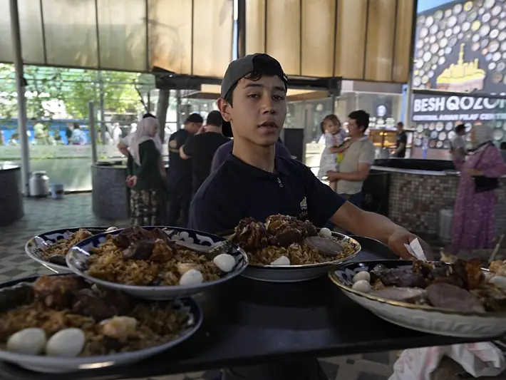

Фото: AIDEPCUL, CC BY 4.0

Плов узбекский с бараниной
Классический ферганский плов в казане: баранина, жёлтая морковь, рис и головки чеснока
150 мин8 порц.996 ккал на порциюБ 31 · Ж 47 · У 115Среднеазиатская кухня
Продукты на 8 порц.
- Баранина1000 г
- Рис1000 г
- Морковь11 шт
- Лук репчатый3 шт
- Растительное масло200 мл
- Чеснок2 головка
- Нут по желанию0,75 стак.
- Зира1 ст. л.
- Перец чили по желанию1 шт
- Соль1 ст. л.
- Вода1,2 л
Как готовить
- Нут замочите на ночь. Рис промойте 5-6 раз до прозрачной воды и замочите в тёплой подсоленной воде на 1 час.
- Морковь нарежьте брусочками толщиной со спичку, лук полукольцами, баранину кусками 4-5 см.
- Раскалите масло в казане на сильном огне до лёгкого дымка. Обжарьте лук 7 минут до золотистого цвета, затем мясо 10 минут до корочки.
- Выложите морковь сверху, через 3 минуты перемешайте и жарьте ещё 10 минут, пока она не станет мягкой.
- Залейте кипятком так, чтобы покрыло на 1 см. Добавьте половину соли, зиру, нут, целые головки чеснока и стручок чили. Тушите на слабом огне 40 минут, это зирвак.
- Выньте чеснок и чили. Посолите зирвак, он должен быть чуть пересоленным. Слейте с риса воду и выложите его ровным слоем, не перемешивая.
- Аккуратно влейте кипяток по шумовке, чтобы вода покрыла рис на 1,5-2 см. Верните чеснок. Варите на сильном огне, пока вода не уйдёт в рис, 10 минут.
- Соберите рис горкой, проделайте палочкой 5-6 отверстий до дна, накройте крышкой и томите на самом слабом огне 25 минут.
- Проверьте рис: он должен быть мягким и рассыпчатым. Перемешайте, выложите на блюдо мясом сверху и подавайте с ачичуком.
Совет. Пропорция 1:1:1 по мясу, рису и моркови, главное правило узбекского плова. Рис берите твёрдый (девзира, лазер или круглый для плова), длинный пропаренный превращается в кашу. После закладки риса плов не мешают до самого конца.